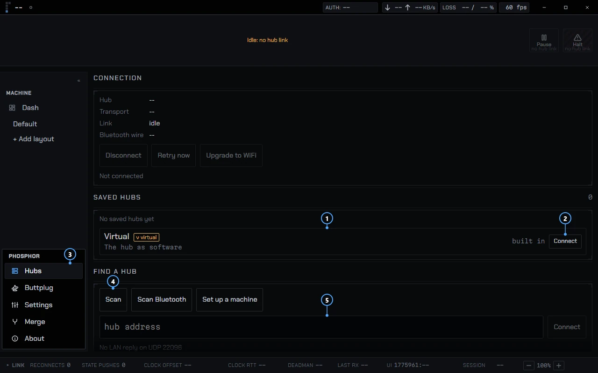
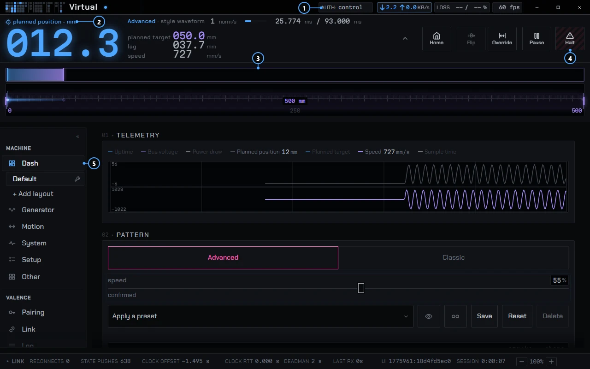

phosphor · docs
Getting started
Install Phosphor, try it on the built-in Virtual machine, then connect a real one. You do not need hardware for the first half.
Install
Nothing is released yet, so there is no installer to download. Downloads will list builds when there are some.
Until then you can build from source. The Phosphor repo expects its siblings beside it in one folder: Valence, Nucleus, Kinetic and ButtplugIO on its valence branch. On Windows you need Rust (MSVC) and Node 22. Then, in the Phosphor folder:
npm ci
npm run build:app -- --bundles nsisPhosphor imports the sibling checkouts directly and keeps no copy of them. The steps for macOS, Linux, Flatpak and Android are in BUILD.md.
First launch
With no saved hub, Phosphor opens on the Hubs page. That page lists saved hubs, finds new ones and holds the Virtual machine. From the second launch on, Phosphor redials the last hub by default. The setting is Settings, Connection, "Reconnect to the last hub on launch", and it is on until you turn it off. So you can open the app and find the machine already connected.
The sidebar has three sections. Machine and Valence fill in once a hub's catalog has loaded. Phosphor, the third, is always there.
Try the Virtual machine
The Virtual is the Nucleus hub firmware compiled to WebAssembly and run inside Phosphor. It has patterns, planning and telemetry like a real hub, and it has no motor. Nothing physical moves, so it is the safe place to learn the app.
- Open Phosphor, then Hubs.
- In the Saved hubs list, find the last row,
Virtual, with aν virtualbadge and the line "The hub as software". - Press Connect. The line changes to
Nucleusand a version, and Connect becomes Stop. - Open Dash in the Machine section. The status slot in the top strip reads "Virtual: nothing moves".
- Open the Generator page, pick a pattern and start it. The rail on the Dash follows it.

- The Virtual row, under Saved hubs.
- Connect starts it.
- Hubs, in the Phosphor part of the sidebar.
- Scan looks for machines on your network.
- The hub address field, for when Scan finds nothing.
The Virtual is never saved as a hub and never auto-connects. It boots homed. Any disconnect stops it, and its settings, presets and pairings persist between runs. So you can close Phosphor and come back to the same setup.
Layouts, plugins and the theme are Phosphor's own state, not the machine's, so anything you build while connected to the Virtual is already saved. To arrange the Dash, use the wrench next to the layout name in the sidebar.
Find a real machine
On the Hubs page, under Find a hub, press Scan. Scan sends a discovery probe on your local network (UDP port 22096) and waits 1.5 s. If any machine answers, you get a list. If none does, Scan falls back to a Bluetooth scan. A machine on your network therefore shows up in about a second and a half, and Bluetooth only starts when the network found nothing.
Each row shows the machine's name, its address, firmware version and when it was last seen. A row can carry marks: LAN or BLE for how it was found, needs setup for a machine with no Wi-Fi, and pairing open. Press Connect on the row.
If Scan finds nothing, type the address into the field under it, as host or host:port. The port is 82 when you leave it off. The field starts with the last address you dialed. A hub is saved once it has been live over Wi-Fi.
A machine with no Wi-Fi yet, or a new network to join, goes through Set up a machine. Pairing and access tiers are on Connecting.
The main screens

- AUTH shows your access tier. Here it reads control.
- The planned position, in millimeters.
- The rail, across the machine's full travel.
- Halt stops the machine.
- Dash, the first page in the Machine section.
Machine
Dash is the home page you arrange. Below it are the pages the machine's catalog defines. The names come from the registry and typically include Generator, Motion, Limits, Hardware, System, Other and Setup. A page appears only if the machine offers settings in that category.
Valence
Pairing, Link and Log. Pairing handles access. Link shows the protocol view: traffic, channels and refusals. Log has tabs for the log, anomalies, safety events, the session, changes and Health.
Phosphor
Display (themes), Plugins, Hubs, Buttplug, Settings, Merge and About. Display folds into Settings in the app and is its own page on the hub-served page.
The top strip
The strip carries Home, Flip, Override, Pause and E-Stop, with the rail and the position numerals beside them. Override lets you jog across the full travel. Pause and E-Stop are always there, and E-Stop latches until you hold it for 3 s. So a stop is one tap away from every page.